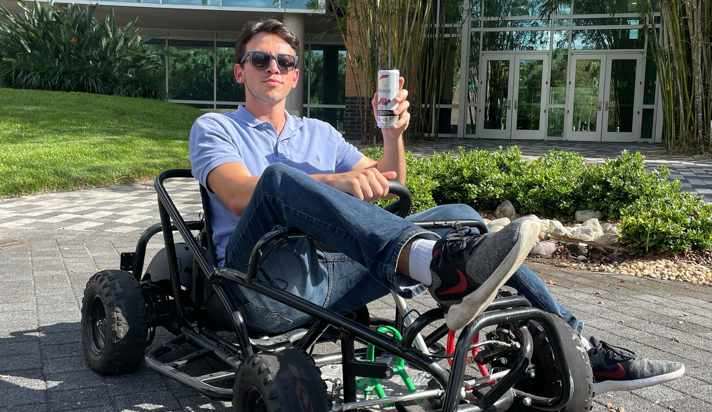

IEEE UCF
Under my leadership as two-time president, IEEE has seen great success and growth that has impacted the likes of numerous UCF engineers. From a commitment to ambitious technical projects and workshops to the growth of a flourishing community of over 300 members, a diversity of opportunity and activity overflowed.
Click here to learn more!

RISES Center
With the digitalization of the electrical power grid, there has been a dramatic increase in the potential for our critical infrastructure to be vulnerable to cyber integrity attacks. My thesis research examines these weaknesses and proposes algorithms to defend the industry at large from attacks.
Click here to learn more!

Qualcomm
My first software role in industry took me to San Diego to work in the cutting edge of technology at Qualcomm's headquaters. My work focused on DSP software for a custom audio interrupt and long range wifi communications for special use within the U.S. government.
Click here to learn more!

Tesla
A red roadster strapped to the top of a rocket initially inspired me to pursue engineering. Little did I know that three years later I would work on the very same vehicles and helping accelerate the world's transition to sustainable energy!
Click here to learn more!
NEI Electrical Power Engineering
Renewable energy is one of the initial kindles that sparked my wider interest for engineering. Developing solar and wind generation sites was a subsequent dream come true for me!
Click here to learn more!

Super State Racer
Redefining the automotive industry. That is the goal of the Super State Racer. The hybrid energy storage system consisting of both a lithium battery pack and an ultracapacitor bank is looking to make more efficient EVs that can extend the lifecycle of lithium batteries. Our team is currently converting a combustion go-kart to a proof-of-concept vehicle under my leadership and seeks to impact the research community with our published findings.
Click here to learn more!
VISION - Billiards for the Blind
Visually Impaired Spatially Interactive Orientation Network
Most Senior Design projects seek to be a showcase of skills to merely get a degree in hand. My team and I instead took this requirement as an opportunity to go above and beyond and innovate a project with the potential to benefit those with less fortunate circumstances. VISION seeks to create a user & table interface to give the visually impaired the ability to enjoy the game of pool. Our project combines aspects of computer vision, AI, audio guidance, and more to create a proof of concept for this idea and open the door for further innovation in the space.
Intro to Engineering TA
Giving back to the community that brought me up has been at the core of my ambitions at UCF. My initial engineering experiences stemmed from working with robots and building a boat for my intro to engineering course, and now I am grateful to give back by teaching freshmen the ins and outs of technichal skills and what it means to be an engineer!

Linear Circuits LA
Under the guidance of Dr. ChungYong Chan, I had the privilege to help students learn and grow through learning the core electrical engineering knowledge imparted through linear circuits. Assisting students through some of the most challenging and fundamental topics of their major with weekly discussion sessions allowed me to work one-on-one and for the class at large on practice problems and important techniques. These methods allowed students to improve their retention of this knowledge for test day, and saw amazing results under our team’s guidance!

Center for Microgravity Research
My first research experience had me developing software and hardware solutions for projects going into space on the back of Blue Origin and Virgin Galactic flights. With the support of NASA research grants, my team and I developed experiments to examine the effects of microgravity conditions on different materials to make conclusions on how future missions to asteroids and the Moon will best adapt to these conditions.
Click here to learn more!
Solar Charger Workshop
The power of the sun in the palm of your hand! In the heart of the pandemic, my team and I were able to deliver an award winning workshop in a time when it was needed most.
Click here to learn more!
Power Supply Workshop
Bringing the power to the people, IEEE brought this workshop to students for them to get hands-on lab experience in a time when it was little offered. In the end, they got to take home a little of the lab with them in their own lab bench power supply via UCF’s 2020-2021 small-scale RSO event of the year!
Arduino Breadboarding Workshop
IEEE workshops at their core are designed to tutor the next round of engineers in the core concepts of electrical and computer engineering. Our introductory workshop in breadboarding and Arduino allowed students to develop three custom circuits to best understand several classes worth of fundamental principles.
Click here to learn more!
TI Digital Systems Workshop
Our first workshop face-to-face workshop of the pandemic era focused on learning the fundamentals of digital and embedded systems through a custom IEEE-designed interaction board. 30 students had the opportunity to interact with microcontrollers and learn where software and hardware meet.
Autonomous Disinfection Robot
In 2020, IEEE Region 3 set out on a mission to inspire the next generation of engineers to work to combat the world's problems through innovation via their pandemic project initiative. IEEE UCF heard the call to action and we began to design an autonomous surface disinfection robot to clear surfaces of UCF’s Health Services Center in a manner that would keep all attendants safe and healthy. By the use of path-finding algorithms and UVC radiation, this robot seeks to combat COVID-19 and all viruses.
Click here to learn more!
Knightr0's Gambit
A mutual love for chess is seen throughout the engineering community, which inspired IEEE UCF and UCF AI to team up to build an autonomous chessboard with our own trained AI.
Click here to learn more!
Knight's Open Circuit Podcast
IEEE UCF's official podcast is a one stop shop for all things electrical engineering in and around the university. We founded KOC as a way to solidify our community through the pandemic, and now the legacy continues on by bringing on amazing guests throughout industry to share their experiences with the world.
Watch my most recent appearance here.
Great Naval Orange Race
Each year every freshman engineering student at UCF descends on the Reflection Pond in a battle to see who can get an Orange to navigate the arch of the pond the fastest. Our custom boat the Pink Panther competed and caught on fire following a T-bone collision from another boat. Amazing memories and learning experiences were had!
Distance Running
While pursuing the greatest heights in engineering, my health has consistently been a top priority to me. Running has been a great way to challenge myself both mentally and physically alongside amazing friends!
Music
Music has been a core part of my life for years. From audio mixing and music festivals to fireside guitar and ukulele sessions, I feel at peace when the good vibes are flowing.


{kind=link}
{kind=link}
{kind=link}
{kind=link}
{kind=link}
{kind=link}
{kind=link}
{kind=link}
{kind=link}
{kind=link}
{kind=link}
{kind=link}
{kind=link}
{kind=link}